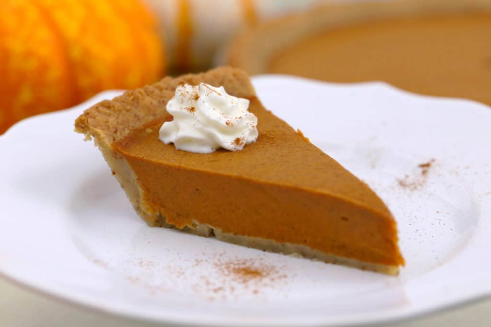

Super healthy pumpkin pie

Description
For a truly healthy pumpkin pie this holiday season, look no further than this vegan, keto pumpkin pie recipe! Grain free, gluten free, dairy free, sugar free — and seriously the BEST low carb pumpkin pie recipe ever.
Ingredients
For the pie crust:
- 1 flax egg, 2 tbsp ground flaxseed + 1/4 cup water
- 2 cups almond flour
- 2 + 1/2 tbsp coconut oil
- 1 tbsp erythritol, optional, to taste
- 1/4 tsp salt
For the pie filling:
- 1 can pumpkin puree
- 3/4 cup coconut cream, or full-fat coconut milk
- 2/3 cup erythritol
- 1 tsp pumpkin pie spice
- 1 tsp cinnamon
- 1/2 tsp sea salt
- 1 tsp vanilla extract
- 2 tsp glucomannan powder
Optional topping:
- whipped coconut cream
Steps
To make Low Carb Pumpkin Pie Crust & Prebake:
- Preheat oven to 350°F (180°C).
- In a measuring cup, combine ground flaxseed and water to make flax egg. Mix and let sit for about 10 minutes, until goopy.
- When flax egg is ready, add all pie crust ingredients to food processor. Pulse to combine, until sticky in texture and dough sticks together when pressed. (Can also mix crust ingredients by hand, if preferred.)
- Press dough into a 9” pie plate, crimping edges if desired.
- To prebake crust, poke holes in the bottom of the crust with a fork to prevent bubbling. Cover dish with a piece of parchment and add pie weights (or dry rice, or dry beans) on top, so parchment is flush with shape of pie crust.
- Bake at 350°F (180°C) for 12 minutes, until lightly cooked and golden.
- Remove prebaked crust from oven and cool for at least 20-30 minutes, or longer.
To make Vegan Pumpkin Pie Filling without Eggs:
- Turn oven temperature down to 325°F (160°C).
- Blend all filling ingredients together in a food processor until well-combined. Allow to sit for about 10 minutes to thicken slightly.
- Pour filling onto cooled prebaked crust, spreading into an even layer. Tap dish to release any air bubbles.
- Bake at 325°F (160°C) for ~60 mins, until set but slightly jiggly in center. It should not be puffing up like a souffle or it is overbaked! If crust is browning too much, cover edges with foil or silicone pie crust protector.
- Cool completely at room temperature before refrigerating. For best results, allow to sit in the fridge overnight before slicing and serving. (At minimum, refrigerate for a few hours before slicing.)
- Serve topped with coconut whipped cream and enjoy!
- Store in the fridge for up to 1 week.